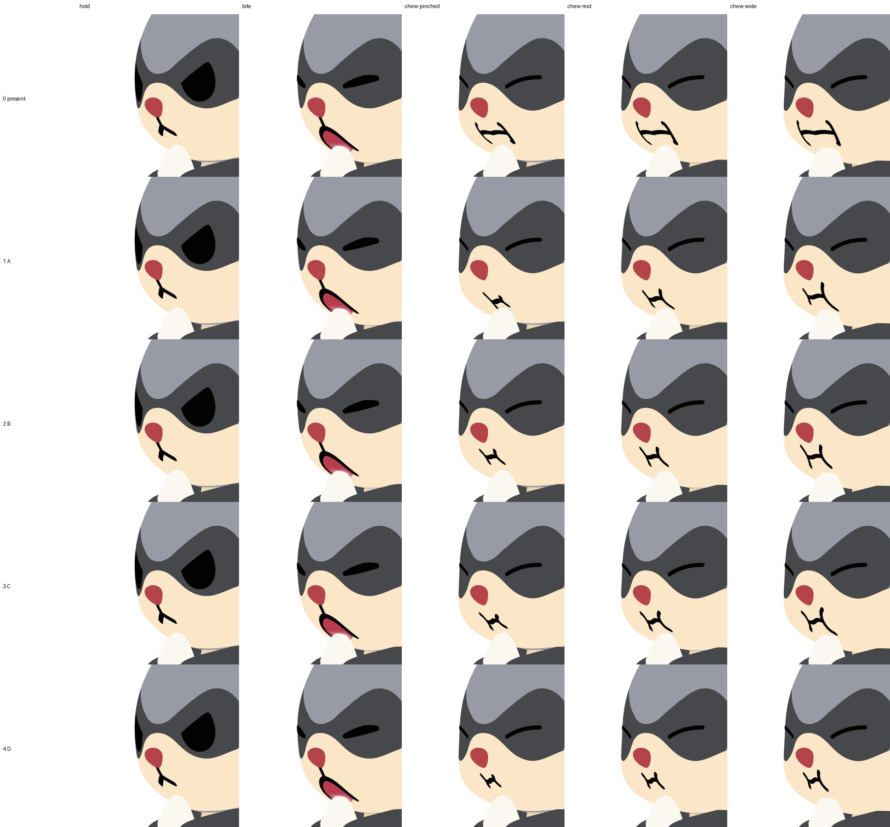
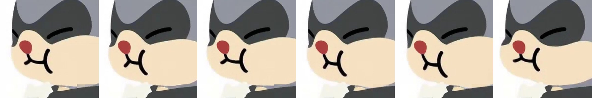
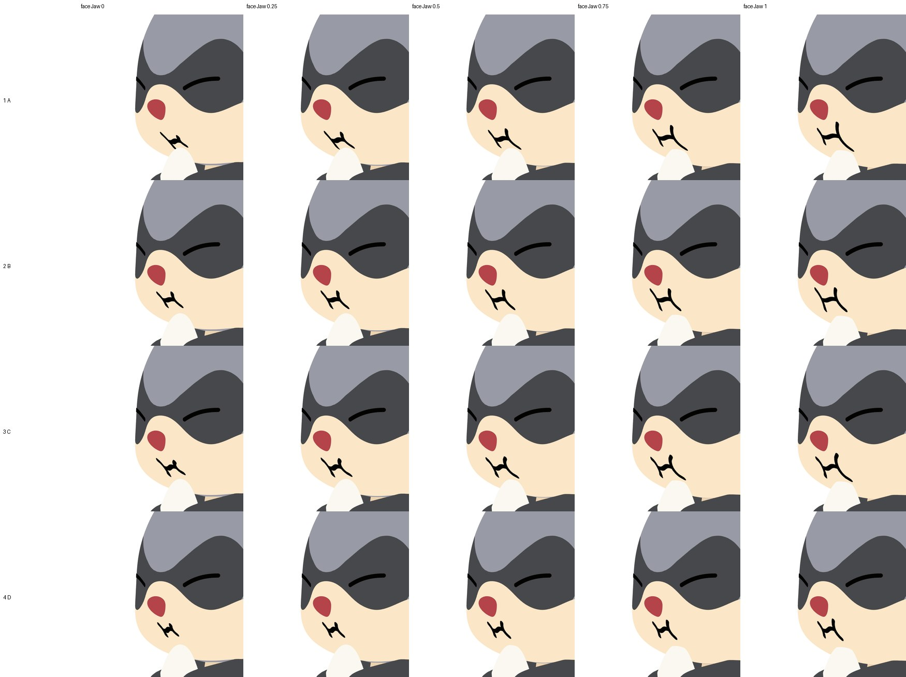
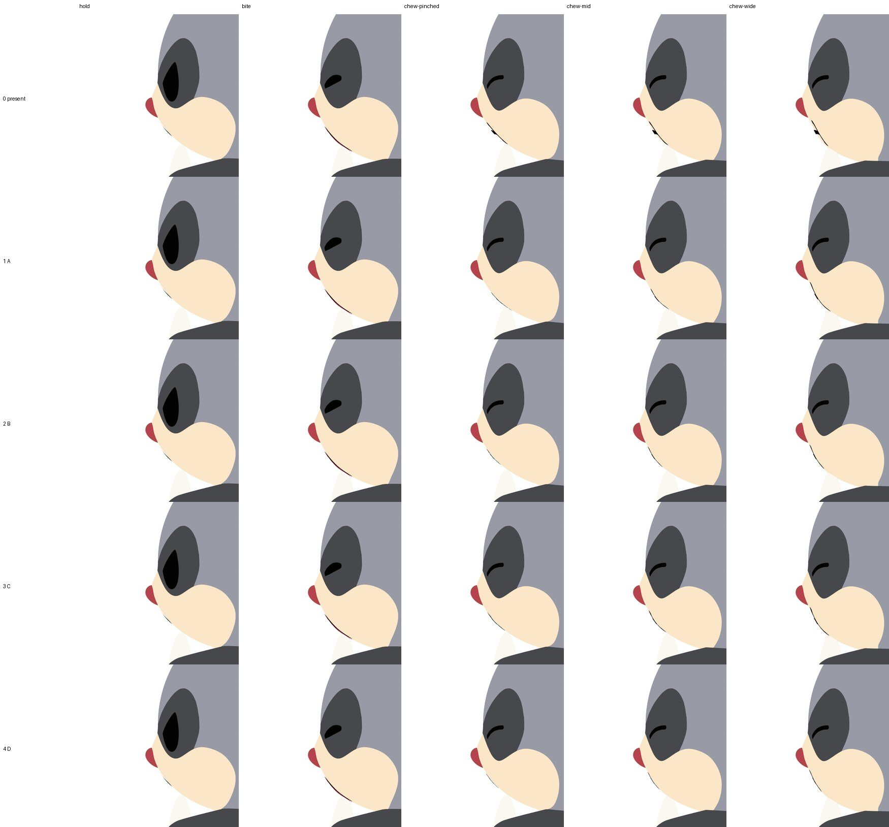
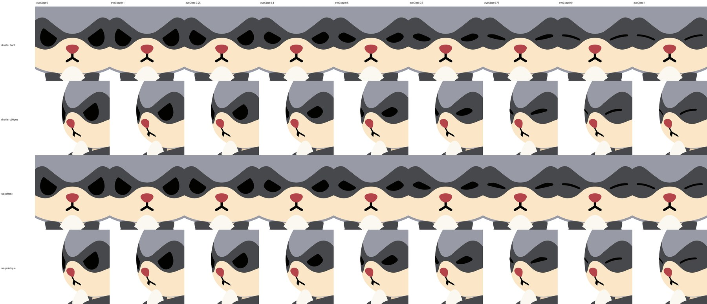

← 一覧
おにぎりを食べる顔：もぐもぐ口4案と目を閉じる仕組み（3D・実機）
2026-09-30 更新。実機（Blender）に4案を切り替え式で組み込み、正面・斜め・横でレンダーしたものです。行 0 は今の実機、1〜4 が案 A〜D。まだ採用前の比較用です。
正面（構え → かじる → 噛む すぼむ／中／開く）
斜め

参考：元動画（SSOT）の斜め視点の噛む口

斜めで噛む途中の形（あごの開き 0 → 1。噛む動きはこの間を往復します）

横

真横では口はマズルの陰でほとんど見えません（元の実機と同じ）。
目を閉じる仕組み（正面・斜め）
上2段「シャッター」（上まぶたが先に下りる）、下2段「ワープ」（上下から押しつぶす）。開き具合 0 → 1。

3D化で直したこと
- 線の描き方を作り替え：今の実機の噛む口は、括弧の上端が斜めに切れ、中央に切れ込みがありました（行 0）。線を「一定幅の帯＋すべての頂点に丸」で描く方式にして、端もつなぎ目も必ず丸くなるようにしました。
- 斜めで顎に流れる線を解消：平面のデザインのままだと括弧の下端が顎の斜面に乗り、斜めから長く流れて見えました。形はそのままで全体を 0.8 倍にして鼻の下へ寄せ、噛むあいだはあごに合わせて口を下げる動きを止めました。
- 噛む口の線は少し細め（構えの口の約 8 割）。通常の歩き・走りなどは今の実機と完全に同じです。
決めていただきたいこと
- 口は A / B / C / D のどれにしますか。
- 目の閉じ方は「シャッター」と「ワープ」のどちらにしますか。
- 目を閉じる区間：かじる瞬間に閉じ始め、噛むあいだ閉じたまま、飲み込んで次の構えで開く、でよいですか。
- 噛む口の線の太さ（今は構えの口より細め）でよいですか。
前回の2D案（参考）
おにぎりを食べる顔：もぐもぐ口と閉じ目のデザイン案
2026-09-30。デザイン：GPT-6 Astra（口も目もすべて数式の曲線で作図）。まだ画像だけで、リグ・モーションには入れていません。
通しのイメージ（おすすめ：口 案A ＋ 目「シャッター」）
構え（目は開いたまま）→ かじる瞬間（目が閉じかけ）→ 噛む（すぼむ／中／開く、目は閉じたまま）

口のデザイン 4案
1段目が SSOT（元動画）。横線の端は括弧の曲線の上にぴったり乗せ、線の太さは一定、端は丸めてあります。

- 案 A（おすすめ）：SSOT に忠実な左右非対称の )~( 。すぼむ時は左の括弧が大きく、開くにつれて右が伸びます。
- 案 B：左右対称で落ち着いた印象。
- 案 C：括弧が丸く波が強めの、柔らかい表情。
- 案 D：小ぶりで鼻に近い、控えめな噛み方。
噛むあいだの途中の形（すぼむ⇔開く の補間。実機ではこの補間で動きます）

目を閉じる仕組み 2方式
開き具合 0 → 1。上の段が「シャッター」（まぶたが上から先に下りる、おすすめ）、下の段が「ワープ」（目の形ごと押しつぶす）。どちらも最後は同じ弧の線になります。

4倍拡大（左右の目、途中の形がすべて角のない1つの形になっていることの確認）

決めていただきたいこと
- 口は A / B / C / D のどれにしますか（おすすめ A）。
- 目の閉じ方は「シャッター」と「ワープ」のどちらにしますか（おすすめ シャッター）。
- 目を閉じる区間：かじる瞬間に閉じ始め、噛んでいるあいだは閉じたまま、飲み込んで次の構えで開く、でよいですか。